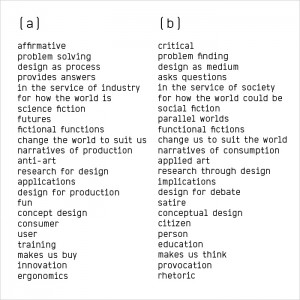
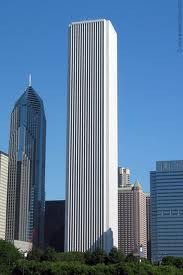
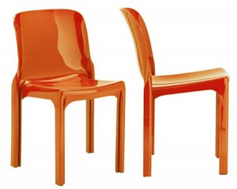
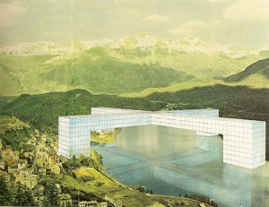
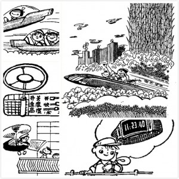

你的异梦呢？
此篇是读Anthony Dunne和Fiona Raby新作《Speculative Everything》的观后感，覆盖范围是第一章“Beyond Radical Design”的内容。
Dunne & Raby是Critical Design批判性设计大师，著名的A/B宣言就出自这对设计夫妇之手，而这本《Speculative Everything》正是“A/B宣言”全面的叙述。

异类造就异梦
1961年柏林墙建立开始—冷战的纠结、越战的焦灼、军备竞赛后的一触即发，共同构筑了一个人类在焦虑、迷惑、颤抖中灼烧的光荣时代。人类一方面享受着大规模生产带来的乐趣、也在被战争阴云所笼罩，而文化往往在踌躇中发酵。
现代主义（Modernism）在这个时代随着大规模生产开始盛行，典型现代主义的建筑风格就是ThoughtWorks的在芝加哥总部所在地Aon Center，一间完全实用主义，把建筑成本降到最低，毫无人性的大楼。

而1966年开始的Anti-Design运动开始不遗余力地嘲笑这种被商业化绑架的设计，而更希望设计能够给人带来思考（参考）。他们采用更多样性的材料和颜色，而不是现代主义设计师常使用的黑白灰；他们也不在乎使用一些寿命较短的材料，例如塑料；他们不崇尚设计英雄主义，经常让用户参与到设计当中来。
Anti-Design运动给我们最重要的遗产是可堆放的彩色塑料椅子，这个被称作Selene Chair的塑料椅子，是1966年Anti-Design运动重要的设计师Vico Magistretti的作品，这样的椅子依然出现在我们的周围。

在这个运动中另外一个标志是Superarchitettura，用宏伟而充满一致性的建筑理念，映射着上一次乌托邦（19世纪末20世纪初）运动中对工人阶级和社区化的重视——这种近乎威胁般刺穿现实的未来，是具备突破性和摧毁性的；同时与现实的共存，或者相互侵蚀，也体现着对现代主义摧毁一切现实的教条主义的抗议。

而Radical Design（激进设计，实际上是一个时期）正是Anti-Design运动中的重要组成部分，而触发它的，正是Superarchitettura。它所造就的，是一个完全与现实不同（radically different）的“异梦”，而这种“异梦”正是我们这个时代渐渐被遗忘的东西。
设计的幼稚病
当问起设计是什么时，恐怕很多人的回答都会是“解决问题”，无论是功能性所解决的“能力缺失问题”，还是感知性所解决的“美感缺失问题”。设计本身具有天生的“乐观性”（inherent optimism），即只要是出现在真实世界中的问题，它一定有一个或者若干的原因，原因是可以被分析也是有范围的，于是任何问题都可以在理性分析的基础上被解决，只是时间和成本的问题。这种乐观产生两个结果是：
- 浪费大量的资源和重复性的工作。
- 忽略系统的复杂程度。
乐观来自于挫败的缺失，在上世纪60年代现代艺术中“近乎痴狂的乐观”被“Anti-Design运动”反对，而这种反对的根因来自于对冷战时期人类社会对未来的挫败感，其表象则是一种不同于实用主义的表达——希望每一件物件都能够让人类“停下来”思考、思考另外一种“可能性”。
最近和美国的同事聊天，在谈到北美的业务时候，我们对很多事情都说不清楚，我说跟你说话，我更加迷惑了，而跟有些人说话他是能让你清醒很多的。在我一直以来的信条中，确定一个目标，朝这个方向努力，必定有很好的结果，可我第一次体会到这种“迷惑”的价值：
- 它让你重新审视你的乐观精神，把幼稚的部分剥离出来；
- 它让你“停下来”思考那些你懒得梳理的关系和逻辑，重新尊重系统的复杂度；
- 它让你想象其他“可能性”。
而你看看和我们相关的互联网设计族群，趋同性（缺少另外一种可能性）背后的正是这种与生俱来的乐观天性。结果被量化、用户被模式化、过程被标准化、设计教育被职业化，最终的结果就是“我们在崇拜同样的东西”、“我们在唾弃同样的东西”、“我们在消费同样的内容”、“我们在期待同样的未来”。这像极了曾经未来主义中振聋发聩的宣言：
我们想歌唱危险的爱，鲁莽和活力的经验；
我们诗歌的主要元素是热诚，勇敢，抗争；
直到今天，文学颂扬静止的沉思，狂喜和沉睡，我们想赞扬进攻性的运动，焦躁的失眠，运动的步骤，危险的跳跃，耳光和一次出拳；
我们宣布世界的光彩是通过新的美感来丰富的：速度的美感。汽车的运行带着他装饰有输送管的嗓子呼啸而行，就仿佛蟒蛇探索的气息。汽车运动轰鸣，空气在他的金属气中前行，她比胜利女神更美。
我们想歌唱人们，他们握住理想主义的标杆达到地球，在他们自己的回路轨道上奔跑……
我并不否认现代主义在人类历史上留下如同AON中心那样的经典之作，乡野中以无数形态存世的Selene塑料椅更让我兴奋，这是另一种可能（Alternative）给我们带来的财富。
未来？
《小灵通漫游未来》是我小时候最喜欢的一套书，当我重新看这本写于1961年（又是60年代，奇妙的60年代）、文革之后出版第一部儿童科幻小说，这在很长时间里，小灵通看到的未来就是我脑中看到的未来。

当我用成年人的思维来梳理小灵通所描绘的未来的时候，我才开始理解未来的局限性，小灵通的未来中包含以下元素：
- 个人终端：如会说话的盒子、电视手表、语言翻译器等；
- 交通工具：如水滴汽车、原子能驱动的气垫船；
- 未来农业：淀粉工厂、人工蔬菜、“农厂”；
- 城市生活：电影院、人工器官、机器人助手、学校；
不可否认其中很多，我们都已经在实现，例如电视手表、智能汽车、甚至无人机送货等，但是仔细思考这样一种对未来的描绘方式本身，是让人兴奋、愉悦、和奋进的。而内容本身，往往是现有需求的延伸，本身是现实的写照。例如大量篇幅对未来农业的描述是否和60至70年代这个特殊历史时期有相互影响的关系，我不敢妄加判断。
这就是为什么Dunne&Raby在书中提到，新的一代人已经不懂得什么叫做“梦（Dream）”，所有人称之为“梦”的东西，实际上只是“希望（Hope）”。而真正的“梦”，应该是一个利用设计的方式去让人们思考未来多种可能性的东西，而并非一个乐观向上的偏见。
这就是Anti-Design运动的初衷，实用主义和未来主义的盛行，从美国的AON中心到中国小灵通看到的未来，它们都用一种让人类舒服的方式创造一个乐观的世界，并无意识中影响着人类的行为，最终的结果也许是“无人性大楼（屯子语）充斥水泥森林”、“吃不完的人工食物”，而这，都不是Anti-Design运动所期待的，它就是要执拗地用设计的方式展现另外一种“未来”，让人重新思考现在。
而作者怀念的，也是这种60至70年代时期设计对异类、社会、以及政治的重新思考，而不是在商业惯性中被产品、人性、利益所淹没。
激进设计的沉沦
激进设计在随后慢慢沉沦，在人类社会之后的几十年中，另一种可能性（Alternative）被遗忘，人类又陷入一种“唯一性”的偏见中。作者所提到的4个原因也颇有些意味：
- 从1980年开始，设计开始完全商业化，“好设计”的标准是功能被消费者埋单，设计另外一些职责，如“启发性”，慢慢消失；
- 1989年柏林墙倒下象征着资本主义自由经济的全面胜利，西方世界陷入空前的乐观情绪，在乐观中人们的选择性变得越来越少，如自由市场坚定支持者“铁娘子”撒切尔夫人说：“没有其他路可走（TINA - There is no alternative）”；
- 社会开始原子化，特别是随着互联网的兴盛、缺少从上至下的影响力，使得曾经“乌托邦式”的社会改良运动变得越来越不可行；
- 从“梦想”到“希望”的转变（dream to hope shift），使得未来变得一元，即“更好的生存”。
这就是Speculative Everything的主旨：我们如何利用设计去创造另外一种可能性，像当年Superstudio做的，去让人们通过梦想着“不可能的东西”去思考现在，而不是期待着“可能的东西”去一步步走向一个被设计好的未来。
We live in a very different world now but we can reconnect with that spirit and develop new methods appropriate for today's world and once again begin to dream.
对你我的启示
到底什么是设计？到底什么是设计师？设计师对自己和对社会的责任有什么不同？设计是否依然重演着每个时代设计都要走过的变迁？我自己也没有答案，但是我相信，不断去理解设计的本质、去挑战你所学到的关于设计的一切、去扮演更多的社会角色、尝试承担更多社会责任、去了解设计的历史，我想，在这个过程中，你总能找到另一条路，也就不再迷茫了。
换言之，我们所犯的错误，是坚信某一条路而拒绝了解另一条路，而本质实际上是害怕迷茫，但是当你真正找到寻找另一条路、理解另一条路的方法和能力，迷茫就变成停下来思考的最好时间，这也是为何迷茫时代能产生伟大设计。